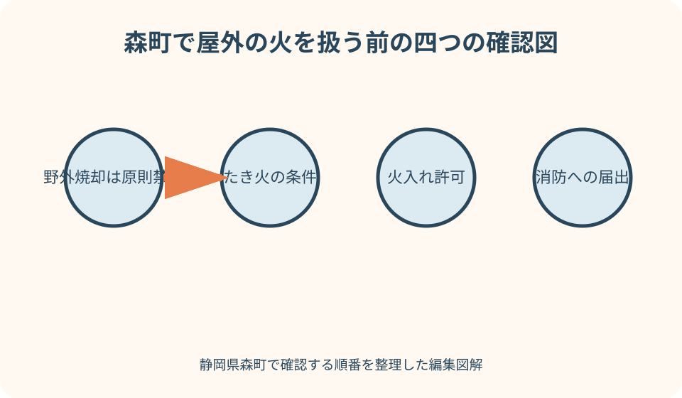
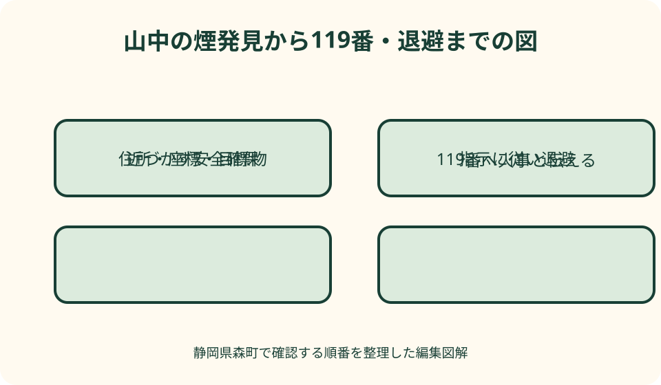

防災・家族の備え｜最終確認 2026-08-10
静岡県森町の山火事予防と119番｜火入れ・たき火・煙発見時の行動
森町で山林に近い場所の火を扱うときは、『ごみ焼却』『たき火』『火入れ』『消防への届出』を同じ手続として扱えません。許可や届出が必要な場合でも、火を使う日の安全を保証するものではありません。煙や炎を発見したら、原因を確かめに近づかず、安全な場所から119番へ現在地と状況を伝えます。

編集イラスト結論：予防の確認と発見後の行動を混ぜない
火を使う前は、行為の目的、場所、燃やす物、森林までの距離、必要な許可・届出、気象、消火準備を確認します。火や煙を発見した後は、手続の調査ではなく安全な退避と119番通報へ切り替えます。
自分が始めた火でも、他人の作業に見える煙でも、『届出済みかもしれない』と判断して通報を遅らせないでください。炎が見える、煙が増える、周囲の枯れ草へ広がるなど火災が疑われるなら、安全な場所から119番へ伝えます。
山火事は道路から離れた場所や斜面で起こると、消防隊の接近と消火が難しくなります。静岡県と消防庁は、たき火や火入れなど人的な要因が多いことを示しており、出火させない準備が中心です。
この記事は、個別の火入れ許可、たき火の適法性、現場の安全を保証しません。森町の担当課、袋井消防署森分署など管轄消防の最新案内へ、実施前に目的と場所を具体的に伝えて確認してください。
野焼き・たき火・火入れ・届出は別の確認が要る
森町のごみの出し方ページは、野外焼却を原則禁止と案内しています。農林業や風俗慣習上の行事など例外に当たり得る行為でも、煙や悪臭など生活環境への配慮が必要で、苦情が生じる場合は指導対象になるとしています。
林野庁と消防庁は、森林または森林の周囲1キロメートルでの火入れに市町村長の許可が必要と案内しています。火入れは、落ち葉を少量燃やす日常的なたき火と同じ言葉ではありません。目的や区域を伝えて確認します。
たき火など屋外での火の取扱いは、火災と紛らわしい煙・炎を生じる行為として消防機関への届出が必要な場合があります。しかし、届出は消防が火災と取り違えないための情報であり、行為の許可や安全認定とは分けて考えます。
つまり、『消防へ届けたから野焼きできる』『火入れ許可があるから強風でも実施できる』とはなりません。廃棄物、森林、火災予防のそれぞれに関係する条件を、森町と管轄消防へ事前に照会します。
実施前の問い合わせは六項目をそろえる
問い合わせでは、①正確な場所、②森林との位置関係、③燃やす目的、④燃やす物と量、⑤予定日時と人数、⑥消火水・器具を伝えます。『畑で少し燃やしたい』だけでは、必要な確認先を絞れません。
場所は住所に加え、地番、近くの道路・橋・公共施設、地図座標、進入路を用意します。山林内は住居表示だけで特定しにくいため、申請・届出の段階から消防車が現場へ近づく経路を言葉にします。
森町役場には、廃棄物、農林業、森林、防災など内容別の担当があります。どの手続か分からないときは、代表窓口で目的と場所を伝え、担当へつないでもらいます。消防への届出の要否は管轄消防へ確認します。
回答は担当、日時、申請・届出名、期限、条件、当日中止条件を記録します。前年に同じ場所で行ったことや近隣の慣行を、今年の手続と安全の根拠にせず、毎回最新情報へ戻ります。

乾燥・強風・林野火災注意報等なら火を使わない
林野庁は、林野火災注意報・警報の発令時など乾燥・強風時には屋外で火を使わないよう呼び掛けています。天気予報が晴れというだけでなく、乾燥、風の強さと向き、注意報・警報を確認します。
静岡県では、山火事が冬から春に多く、特に2月から3月を多発期として予防運動を実施しています。季節外なら安全という意味ではなく、枯れ草、落ち葉、伐採物が乾いていれば一年を通じて延焼の危険があります。
森町公式サイトに掲載された袋井消防本部の資料は、林野火災注意報時に火入れ、煙火、屋外の火遊び・たき火などをしないことを示しています。発令の有無と現在の火気制限を、実施直前に確認します。
許可・届出を終えていても、当日の風が強い、予報が悪化した、消火要員が欠けた、水が確保できない場合は中止します。延期費用や作業日程より、火を出さない判断を優先します。
どうしても適法に火を扱う日の現場設計
必要な許可・届出を確認し、実施できる日でも、一人で行わず、監視と消火を担当する人を分けます。火のそばを無人にせず、全員が中止の合図、119番通報、退避方向を共有します。
水、消火器、火たたきなど、行為と場所に応じた消火手段を手元へ置きます。水源が遠い、ホースが届かない、携帯電話が圏外なら、その条件自体を実施中止の材料にします。
枯れ草、落ち葉、枝、可燃物を火の周囲から除き、火の粉が飛ぶ先まで見ます。ただし、除去範囲や人数を自己流の数値で決めず、許可条件と消防の指導に従います。
終了時は炎だけでなく、残火、灰、周囲の地面を確認し、完全に冷えるまで監視します。土をかけて煙が見えなくなっただけで帰らず、水を使う方法や確認時間も事前に消防へ尋ねます。
農作業の焼却は慣例で判断しない
田畑の作業で出た草木でも、すべて自由に焼却できるわけではありません。廃棄物の野外焼却の原則禁止と例外、森林近接地の火入れ、消防への届出を分け、作業目的と物を森町へ伝えます。
ビニール、プラスチック、塗装材、家庭ごみを混ぜてはいけません。燃やす物の一部が農作業由来だから全体が例外になると考えず、森町の分別・処理方法で処分できる物は、焼却しない方法を選びます。
請負作業では、土地所有者が許可を取った、作業者が届出をしたという口頭確認だけで始めません。許可・届出の対象、条件、現場責任者、中止判断、消火担当を作業前の打合せで書面化します。
近隣への連絡は、煙の苦情を避けるだけの手続ではありません。呼吸器への影響、洗濯物、視界、交通への影響を減らす配慮です。近隣へ告知しても、法令や当日の安全条件を満たしたことにはなりません。
散策・キャンプ・喫煙でも火種を残さない
林野庁は、枯れ草など燃えやすい場所でたき火をせず、火気使用中は離れず、使用後は完全に消火するよう求めています。施設や土地管理者が火気を禁止している場所では、携帯器具でも使用しません。
たばこは指定場所だけで吸い、吸い殻を確実に消し、投げ捨てません。携帯灰皿があっても、林野火災注意報・警報時や施設の禁止場所で喫煙できる根拠にはなりません。
車の排気系統や刈払機など、炎が見えない熱源・火花にも注意します。乾いた草の上へ高温部分が接する、金属刃が石へ当たり火花が出るといった状況を避け、機器の説明書と作業管理者の指示に従います。
子どもの火遊びを防ぎ、マッチ、ライター、着火剤を手の届かない場所へ保管します。使用後の炭や灰は、冷えたように見えても火種が残る可能性があるため、施設が指定する方法で処理します。
煙や炎を見たら原因調査より119番を先にする
山林、草地、農地周辺で煙や炎を見たら、まず自分と周囲の人を煙・火から離します。火元を近くで撮影する、所有者を探す、届出済みか聞き回るために通報を遅らせません。
火災か迷う場合でも、煙が継続・増加している、炎が見える、火の粉が飛ぶ、草木へ広がる、無人に見えるなら119番へ状況を伝え、指令員の質問に答えます。誤認を恐れて様子を見続けないことが重要です。
複数人がいる場合は、一人が安全な場所から119番、一人が周囲へ退避を呼び掛けます。全員が電話をかけ続けるより、通報済みであることと通報者の位置を共有します。
自分で消せそうに見えても、通報せず斜面へ入るのは危険です。水を掛ける間に背後へ回り込まれる、煙で方向を失う、落枝や転倒に遭う可能性があるため、退路と安全を最優先にします。
119番で伝える六点と話す順番
最初に『火事です』と伝え、①発生場所、②近くの目標物、③何が燃えているか、④炎・煙の広がり、⑤逃げ遅れやけが人、⑥通報者の氏名と電話番号を、指令員の質問に沿って答えます。
住所が分かるなら『静岡県周智郡森町』から番地まで伝えます。山中で住所が分からなければ、登山口、林道名、橋、施設、電柱番号、案内板など消防が地図で照合できる目印を伝えます。
スマートフォンの地図座標や位置共有は補助になりますが、端末のGPS位置がずれる場合もあります。自分が火元のすぐ近くにいるのか、離れた道路から斜面を見ているのかも言葉で説明します。
通報後は指令員の指示を聞き、折り返しに備えて電話を使える状態にします。安全な場所へ移動する場合は移動方向を伝え、消防車を案内するために危険な現場へ戻らないでください。
森町の山中で場所を特定するメモ
森町では町なかだけでなく、三倉、天方など山間部にも道路、集落、施設があります。山林の位置は『森町の北の方』では足りないため、入山前に入口の住所と地図ピンを家族へ共有します。
作業者は、林班や地番を知っていても、それだけで119番受信者へ直ちに伝わるとは限りません。一般に分かる道路、橋、施設名、入口からの距離、進行方向を併記し、紙の作業図にも緊急連絡欄を設けます。
散策者は、最後に通過した案内板の名称・番号、分岐、歩いた時間、標高表示などを記録します。煙を見るため予定路から外れず、分からない情報は推測せず『不明』と答えます。
運転中に見つけた場合は、安全な場所に停車してから通報します。道路名、進行方向、直前に通った交差点や橋、煙が道路の右か左かを伝え、運転しながら撮影や入力をしません。
安全な退避は距離・煙・退路で判断する
炎が小さく見えても、風、斜面、乾いた植生で急に広がる可能性があります。火と煙から十分に距離を取り、燃えやすい草木の中へ進まず、来た道を含む安全な退路を失わないようにします。
煙で息苦しい、視界が悪い、熱を感じる、火の粉が飛ぶ、風向きが変わる場合は、撮影や案内をやめて直ちに離れます。具体的な退避方向は現場で異なるため、消防・警察・施設管理者の指示を優先します。
車へ戻るために火の近くを横切る、荷物や農機具を回収する、家畜を探すなど、物を守るための再進入をしません。同行者を点呼し、子どもや高齢者を先に安全な場所へ移します。
自宅付近で火災が迫る場合も、屋根へ上がって散水する、山側へ見に行くといった行動は避けます。町から避難情報や消防の指示が出たら従い、ハザードマップで準備した複数経路を現場状況に合わせます。

初期消火を試みる境界を厳しくする
自分が管理していたごく小さな火で、消火水が手元にあり、退路が確保され、煙や熱が弱い場合でも、延焼が始まったら119番を優先します。消火できるという自己評価で通報を後回しにしません。
炎が背丈に近づく、枯れ草や樹木へ移る、風で火の粉が飛ぶ、煙で見えにくい、斜面へ広がる場合は、個人で追い掛けません。消火器の有無にかかわらず退避します。
衣服へ火が移る、転倒、煙を吸うなど、初期消火をした人自身が負傷することがあります。安全な範囲を超えた活動は消防隊の到着を遅らせる二次被害になり得るため、周囲への警告と誘導へ切り替えます。
消えたように見えても、地面、落ち葉、切株の内部へ火が残る場合があります。勝手に通報を取り消さず、消防の確認を受け、再び煙が出たときは再通報します。
119番がつながらない場合の代替手段
消防庁は、通信・通話障害で携帯電話から119番がつながりにくい場合、公衆電話を使う、近隣の人や店へ通報を依頼する、消防署所へ直接駆け込むなどを案内しています。
ただし、消防署へ向かうため火元の近くを通る、運転しながら電話することは避けます。同行者がいるなら別の通信会社の端末や固定電話を試し、安全な場所から複数経路を使います。
SNSへの投稿は119番の代わりになりません。位置が不正確な写真や古い投稿が拡散すると見物人を集めるおそれがあるため、消防への通報を最優先にし、公開投稿で現場へ人を呼びません。
通報を他人へ頼んだ場合は、『誰が、何時に、どの場所を通報したか』を確認します。伝言だけで通報済みと思い込まず、自分も安全な範囲で消防からの折り返しに対応できるようにします。
山火事予防を準備する良い点
良い点は、火入れとたき火、廃棄物処理、消防への届出を分けて確認することで、『誰かが手続済みだと思った』という空白を減らせることです。中止条件まで書けば現場責任者も迷いにくくなります。
場所説明メモは、火災だけでなく山中のけが、車両事故、迷子にも役立ちます。入口の住所、地図座標、目標物、進入路を作業前に共有すれば、緊急時に煙へ近づいて場所を確かめる必要が減ります。
焼却しない代案を持つと、近隣の煙害、火の監視、残火確認の負担も減ります。草木の処理方法を森町へ相談し、収集、持込み、堆肥化など対象物に合う方法が使えるか確認します。
地域で119番の練習をすれば、『住所が分からないから通報できない』というためらいを減らせます。指令員へ不明点を正直に伝え、目標物と自分の位置を説明する訓練が実用的です。
山火事予防と通報で注文したい点
注文したい点は、住民から見ると、火入れの許可、消防への届出、野外焼却の禁止と例外、林野火災注意報等の情報が別々に存在し、最初の相談先と順番が分かりにくいことです。
森町公式サイト上で、目的、場所、燃やす物を選ぶと必要な相談先へ進める案内があれば、届出を許可と誤解することも減らせます。注意報・警報の発令中は、同じ案内から火気制限へ到達できる設計が望まれます。
土地所有者や事業者にも注文があります。許可証や届出書を現場に置くだけでなく、作業者全員へ条件、中止判断、消火担当、119番用の場所情報を共有し、予定を優先して強行しないことです。
住民は煙を見るとすぐ違反と決めつけて当事者へ詰め寄らず、火災が疑われるなら安全な場所から119番へ事実を伝えます。生活環境上の相談と、進行中の火災通報は緊急度と窓口を分けます。
代案・結論：燃やさない・延期する・専門先へ頼む
第一の代案は燃やさず、森町の分別・搬出方法に従って処理することです。第二は気象と人員が整う日へ延期すること、第三は必要な資格・設備・手続を確認した事業者へ相談することです。
農林業上やむを得ないと思う場合も、個人の『必要性』だけで例外を確定しません。燃やす物、量、目的、森林との距離を町へ示し、廃棄物、森林、消防の確認を終えるまで実施しません。
火を使う直前に風が出た、注意報等が発令された、監視者が来られない、消火水が不足したなら、許可・届出があっても延期します。『今日しかない』を安全判断より上に置きません。
結論として、手続は実施資格の確認、安全は当日の中止判断、火災発見後は119番と退避です。この三つを別の欄に書けば、許可を安全保証と誤解せず、緊急時に調査へ時間を使わずに済みます。
大石の視点：山際の土地は火を使わない管理を先に考える
大石の視点では、山際の土地や空き家で草木が増えたとき、まず刈った後の処理と搬出経路を計画します。片付けの最後に燃やす案を置くと、量、乾燥、周辺森林、近隣住宅の条件を見落とします。
所有者が遠方にいる土地では、現場作業者へ判断を丸投げしません。境界、森林との距離、搬出路、近隣、電線、建物を図面と写真で共有し、火を使わない見積りも比較します。
土地を売る、貸す前の見栄えを整える目的で野焼きを急ぐのは避けます。草刈り、剪定、処分は時間と費用を要する維持管理として予算化し、法令確認と安全条件を省略しません。
山火事後に土地の状態を確認するときも、所有者だから立ち入れるとは限りません。消防・警察・町の規制と再燃、倒木、斜面の危険を確認し、専門家の調査が必要な場所へ個人で入りません。
作業前と発見時に使う二枚のチェック表
作業前表には、場所、目的、物、森林までの関係、町の確認先、消防への届出、許可番号・条件、当日の風・乾燥情報、注意報等、人数、消火手段、中止判断者を記します。
発見時表には、119番、静岡県周智郡森町から始まる場所、目標物、地図座標、何が燃えているか、煙と炎、風、建物・人への接近、逃げ遅れ、通報者番号を並べます。
二枚を一枚にまとめない理由は、火災時に許可番号を探して通報が遅れるのを防ぐためです。発見時表は、作業者だけでなく家族、訪問者、運転者も読める短い言葉にします。
現場へ掲示する場合は、個人電話や土地情報を誰でも見える場所に出さず、必要な担当だけが持ちます。緊急通報に必要な住所と目標物は、作業車や持出袋など安全に参照できる場所へ置きます。
通報後・鎮火後も勝手に現場へ戻らない
消防車の音が聞こえても、現場へ戻って手招きする必要があるとは限りません。指令員へ安全な待機場所を伝え、道路を塞がず、消防隊の進入と水利確保を妨げない位置にいます。
避難した住民や作業者は、氏名と最後に見た位置を代表者がまとめます。持ち物、車、農機具を取りに戻らず、消防・警察の立入規制に従います。
炎が見えなくなっても、地表下や倒木内部の残火、風による再燃、焼けた木の倒壊があります。鎮火判断は消防に委ね、許可なく現場確認や後片付けを始めません。
その後の記録は、発見時刻、通報時刻、場所、退避先、消防から受けた案内に絞ります。原因を推測してSNSへ個人名や土地名を投稿せず、必要な調査へ事実を提供します。
まとめ：火を出さない判断と早い通報を分けて備える
静岡県森町で山火事を防ぐには、野外焼却、たき火、火入れ、消防への届出を分け、目的・場所・物を町と管轄消防へ事前に伝えます。許可や届出は当日の安全保証ではありません。
乾燥、強風、林野火災注意報・警報など火災危険が高い日は実施せず、水・消火器、複数人、監視、退避、完全消火が準備できない場合も中止します。燃やさない処理方法を第一に比較します。
煙や炎を発見したら、原因や違反を調べに近づかず、安全な場所から119番へ通報します。静岡県周智郡森町、住所・座標・目標物、何が燃えているか、人や建物への接近を答えます。
火が広がったら個人で追わず、煙、熱、火の粉から離れ、消防の指示に従います。今日できる一歩は、作業場所または散策先の住所と目標物を確認し、燃やさない草木処理を森町へ相談することです。
公式情報・確認先
掲載内容は次の一次情報を基礎に整理しました。営業、料金、催し、交通は変わるため、出発前または手続き前にリンク先で最新情報を確認してください。
- ごみの出し方（静岡県森町、2026-08-10確認）
- 防災情報（静岡県森町、2026-08-10確認）
- 森町防災ハザードマップ（静岡県森町、2026-08-10確認）
- 林野火災注意報制度の概要・屋外の火の届出（袋井消防本部・静岡県森町掲載、2026-08-10確認）
- 山火事対策（静岡県、2026-08-10確認）
- 林野火災への備え（総務省消防庁、2026-08-10確認）
- 令和6年版消防白書 林野火災の出火防止対策（総務省消防庁、2026-08-10確認）
- 119番の正しいかけ方（総務省消防庁、2026-08-10確認）
- 119番緊急通報（総務省消防庁、2026-08-10確認）
- 山火事予防に当たって注意することは？（林野庁、2026-08-10確認）